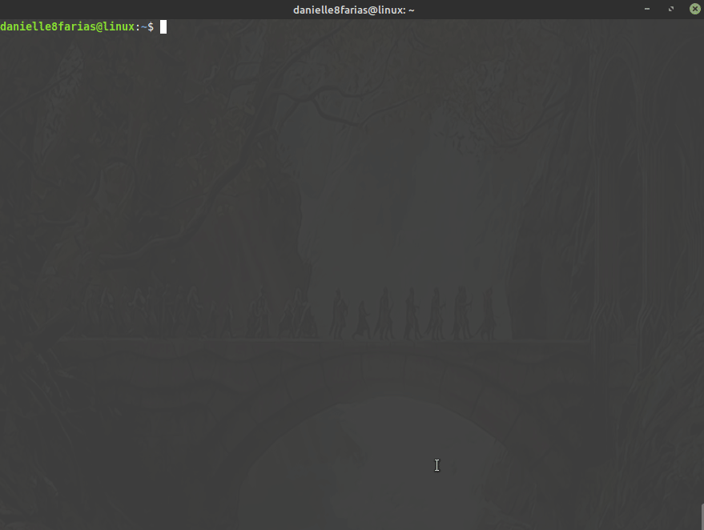
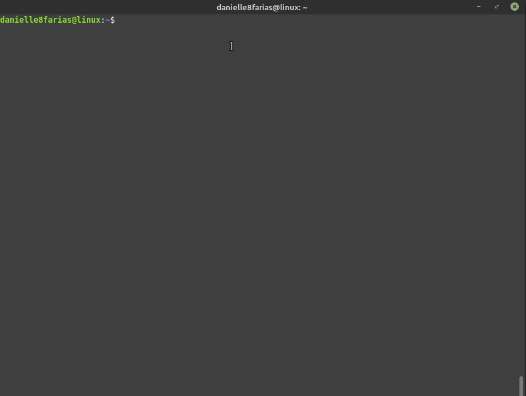
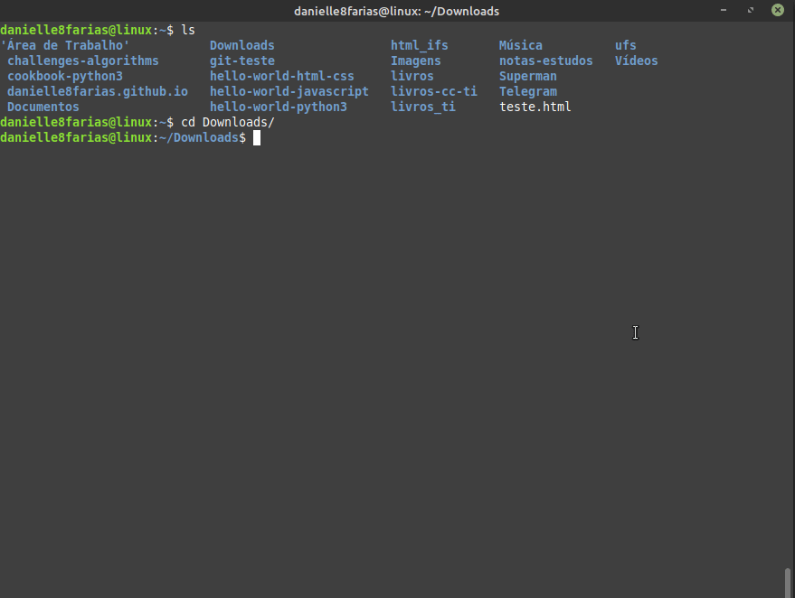

Essa instrução serve para as distros Linux baseadas no Debian (Ubuntu, Mint e derivados) e que usam a ferramenta apt.
Usando o apt
$ sudo apt install <nome_do_programa>
- $ indica que você deve usar o usuário comum para fazer essa operação.
- sudo serve para pedir permissões de administrador temporariamente.
- apt do inglês, Advanced Package Tool, em português, Ferramenta de Empacotamento Avançada; é a ferramenta que nos ajuda na instalação, atualização e desinstalação de programas, entre outras funções.
- install é o comando de instalar, indicando ao apt o que fazer.
- digite o nome do programa sem os sinais < e >.
Provavelmente, após esse comando o sistema irá pedir a senha que você configurou no início da instalação do sistema operacional.
Exemplo:
Para fazer a instalação sem a pergunta de confirmação, basta acrescentar o -y ao final do comando.
$ sudo apt install <nome_do_programa> -y

Instalando um pacote .deb
Caso você tenha um pacote .deb que deseja instalar, vá até a pasta onde está o arquivo
Exemplo:
e digite no terminal
$ sudo apt install ./<nome_do_pacote>.deb
Desse modo todas as dependências serão verificadas e instaladas.
- O ponto-barra juntos serve para indicar o caminho do executável;
- o ponto significa diretório atual;
- a barra serve para separar o diretório do nome do arquivo.
Instalando um pacote .deb usando o dpkg
Vá até a pasta onde está o arquivo .deb e digite no terminal:
$ sudo dpkg -i <nome_do_pacote>.deb
- dpkg do inglês, Debian Package, é uma ferramenta que gerencia pacotes .deb.
- i é o comando de instalar, indicando ao dpkg o que fazer.
Exemplo:
Dessa maneira porém, as dependências não são instaladas, para corrigir isso, digite:
$ sudo apt install -f
- -f do inglês, *fix*, para corrigir o que falta.
Caso haja algo que precise de reparo, será mostrado na tela, pedindo a confirmação do usuário.